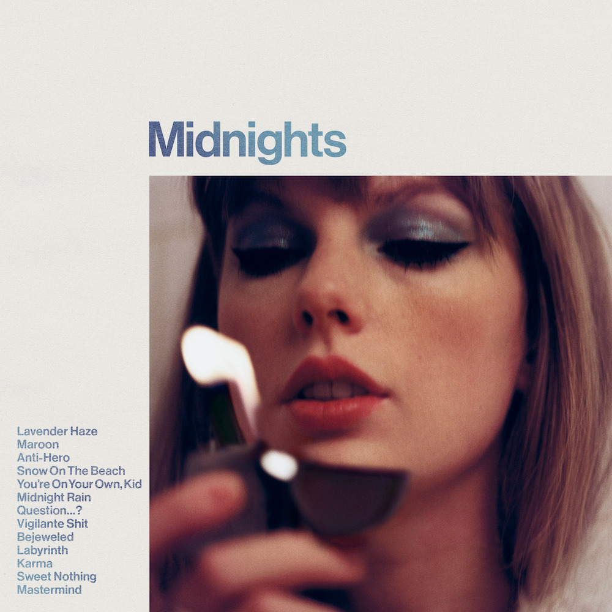

Taylor Swift's Midnights album is out now!
Midnights is Taylor Swift’s tenth studio album that features 13 new tracks by the songstress. The album was released on October 21, 2022 at exactly midnight Eastern Time. Three hours after Midnights’s release, Swift also released Midnights (3 am Edition) which features an additional seven tracks. The album went on to be Spotify’s most-streamed album in one day before the midnight of October 22, 2022. Swift also previously held Spotify’s most-streamed album in a single day with her release of “Red (Taylor’s Version)” and “folklore.”
Midnights Promo
@taylorswift (via Tik Tok) Mark your calendar! Meet the Midnights Manifest 📜 #tsmidnight #swifttok #midnightsmanifest
Making Midnights
@taylorswift (via Tik Tok) The making of Midnights 🌌 #TSmidnighTS #SwifTok